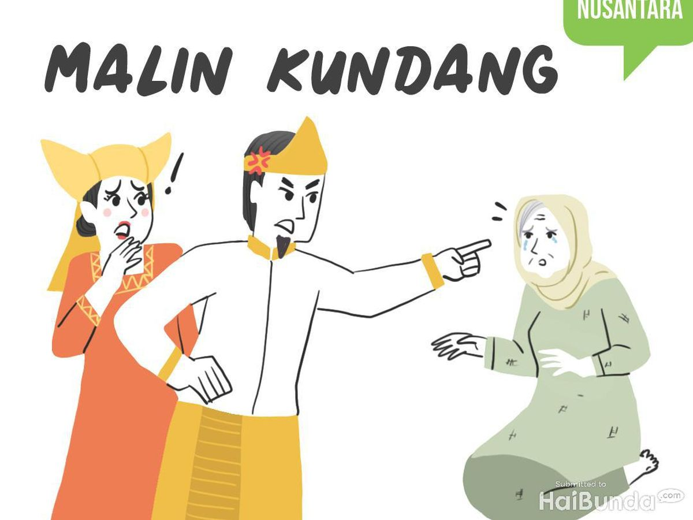
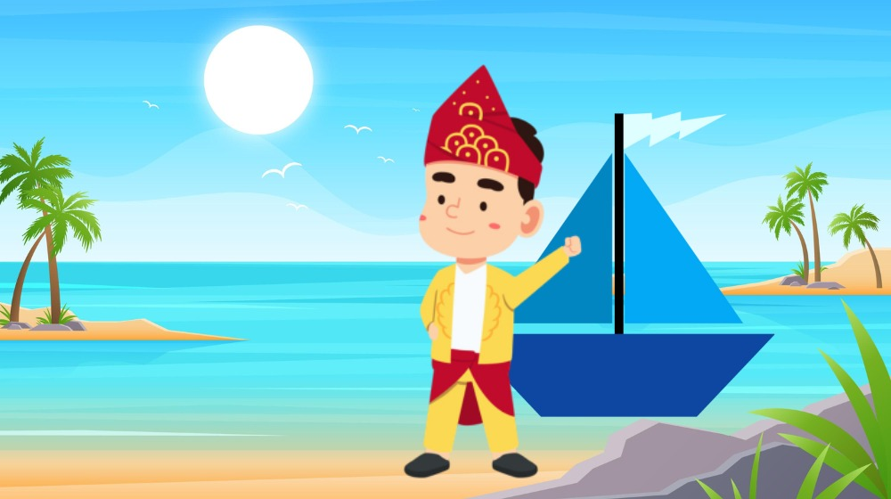
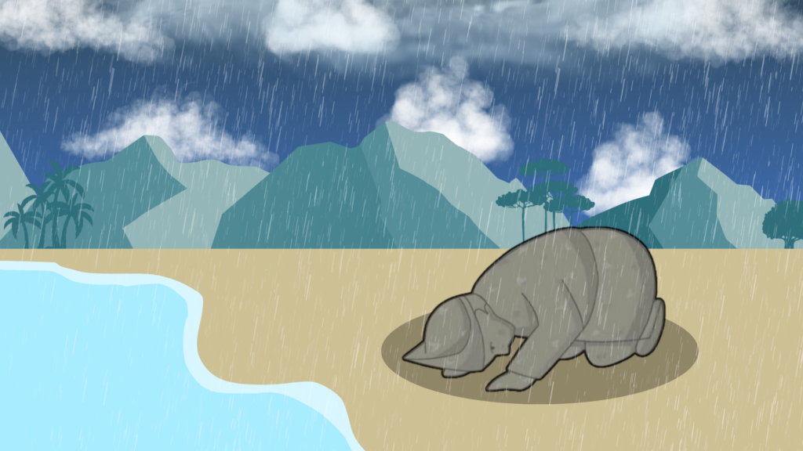

Cerita Malin Kundang
Bab 1: Malin Meninggalkan Ibu
Di sebuah desa di pesisir Sumatra Barat, hiduplah seorang ibu yang sangat menyayangi anaknya, Malin Kundang. Namun, Malin memutuskan untuk merantau mencari kehidupan yang lebih baik.
Bab 2: Malin Kaya Raya
Setelah bertahun-tahun merantau, Malin menjadi seorang pedagang kaya raya. Ia kembali ke desanya dengan kapal besar dan pakaian mewah.
Bab 3: Adegan Kutukan
Ketika Malin kembali, ia menolak mengakui ibunya karena malu dengan asal-usulnya. Sang ibu pun mengutuk Malin menjadi batu sebagai hukuman atas durhakanya.
Pesan Moral
Hormat dan bakti kepada orang tua adalah nilai yang sangat penting. Durhaka kepada orang tua dapat membawa malapetaka dan penyesalan seumur hidup.